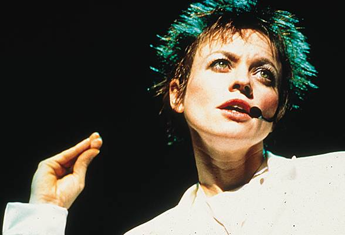

Trayectoria y proyección internacional
Nacida en Estados Unidos, Laurie Anderson comenzó su carrera en el circuito del arte experimental y la performance en la década de 1970. Su reconocimiento se amplió cuando
logró llevar propuestas conceptuales a públicos más amplios, manteniendo una fuerte identidad artística.
Uno de sus trabajos más conocidos es O Superman, una pieza que combina
música electrónica y narrativa, y que alcanzó difusión internacional. Este tipo de obras evidencian su capacidad para integrar lo experimental con formatos más populares.
A lo largo de su trayectoria, ha presentado sus obras en museos, teatros y festivales de todo el mundo. Su producción ha influido en múltiples disciplinas y continúa siendo una
referencia en el cruce entre arte, tecnología y narración.

